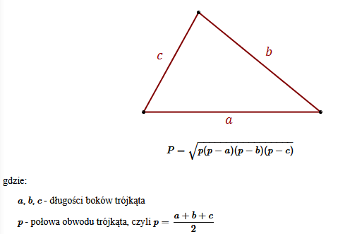

Zadanie 1
Stwórz trzy pola formularza typu numerycznego - nie mogą przyjmować wartości ujemnych.
Sprawdź, czy z podanych wartości można złożyć trójkąt (czy suma długości dowolnych dwóch boków jest większa, niż trzeci bok - to sprawdzenie musi być prawdziwe dla każdego zestawu boków!)
Jeżeli tak, oblicz i wyświetl pod polami formularza obliczone pole, na podstawie wzoru poniżej:
Jeżeli długości boków nie pozwalają na stworzenie trójkąta, wyświetl odpowiedni alert.
Zadanie 2
Stwórz przycisk z napisem "Zadaj w myślach pytanie wyroczni i sprawdź, czy twoje myśli się spełnią".
Po kliknięciu w ten przycisk, ma wykonać się funkcja, która wylosuje liczbę z przedziału 0 - 100. Następnie wyświetli na stronie napis: "Prawdopodobieństwo, że tak się stanie, wynosi X%", gdzie w miejsce X zostanie wpisana wylosowana liczba.
Dodatkowo, jeżeli prawdopodobieństwo jest w zakresie 0 - 33%, napis ma być czerwony. Jeżeli jest w zakresie 34 - 66%, napis ma być żółty. Jeżeli jest w zakresie 67 - 100%, napis ma być zielony.
Zadanie 3
Stwórz dwa tekstowe pola formularza. Po wciśnięciu przycisku, na stronie ma pojawić się napis, który składa się z tych słów, ale z zamienionymi pierwszymi literami (np. "liść dębu - diść lębu")
Zadanie 4
Stwórz pole formularza na tekst. W konsoli wyświetl informację "TAK/CZĘSCIOWO/NIE", w zależności od tego, czy tekst spełnia podane założenia:
- Czy tekst ma minimum 6 liter?
- Czy w tekście znajduje się słowo "kot"?
- Czy tekst zaczyna się z wielkiej litery?
Jeżeli wszystkie założenia są spełnione - TAK. Jeżeli tylko jedno, lub dwa - CZĘŚCIOWO. Jeżeli żadne - NIE.